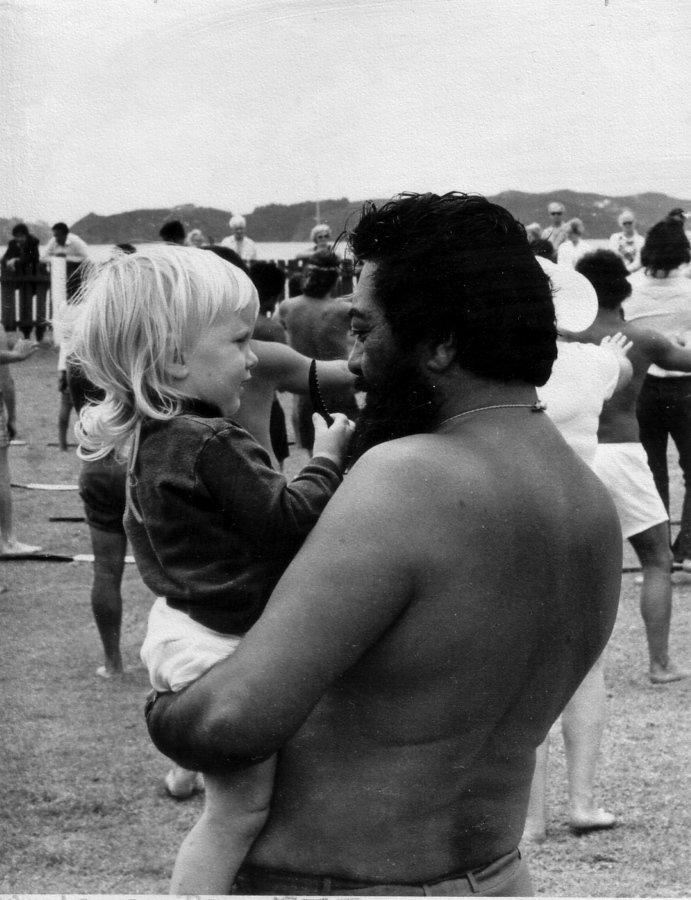
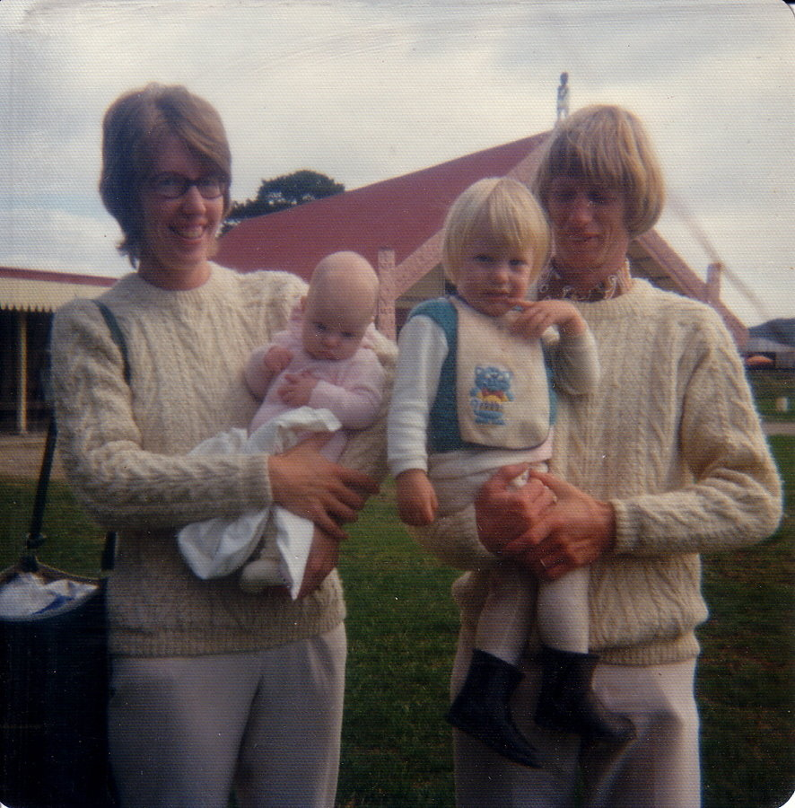

Some basic Māori
Why should we learn?

Pronounciation
Five vowels: a,e,i,o,u and long form ā,ē,ī,ō,ū
Seven consonants: h, k, m, n, p, r, t, w
Two digraphs: wh, ng
Simple tikanga
Tables
Heads
Mihi
Waiata
Kai

Useful Resources
http://tetaurawhiri.govt.nz/learning-maori/whakahuatanga-pronunciation/
http://tetaurawhiri.govt.nz/learning-maori/tikanga-maori/
https://www.youtube.com/user/TalkMaori/videos
http://www.maoritelevision.com/tv/shows/dora-matatoa
http://www.nzhistory.net.nz/culture/maori-language-week/100-maori-words